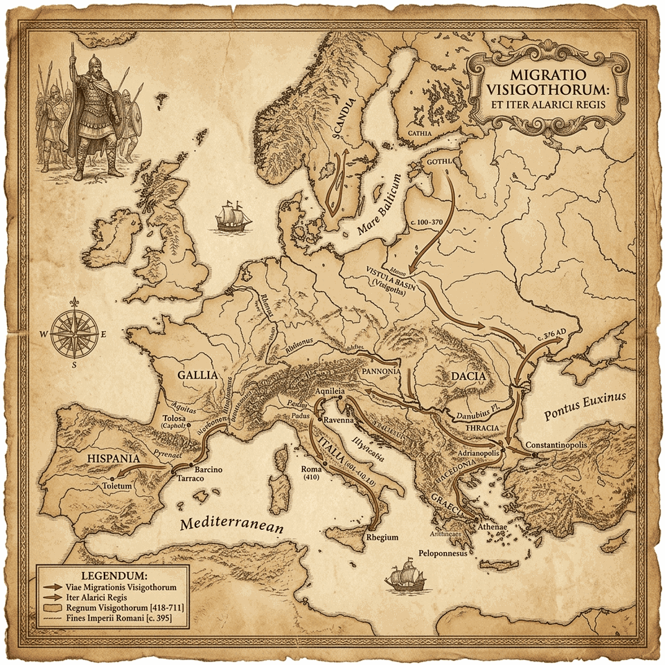

阿拉里克與哥德大遷徙：晚期羅馬帝國的地緣政治坍塌與蠻族同盟的體制化適應（第一卷：永恆之城的終局）

羅馬邊防的結構性崩潰與西哥德民族的身分建構
西元四世紀末期，歐亞大陸邊緣的地緣政治格局發生了根本性的劇變。西元 375 年，來自亞洲深處的匈人（Huns）越過頓河，擊潰了黑海北岸的格魯通吉人（Greuthungi，即後來的東哥德人前身），進而引發了一場席捲整個中東歐的人口連鎖遷徙。在這股強大的人口遷徙壓力下，活動於德涅斯特河以西的特爾溫吉人（Thervingi，西哥德人直系祖先）在領袖弗里蒂根（Fritigern）的率領下，於西元 376 年集結於多瑙河畔，向東羅馬帝國皇帝瓦倫斯（Valens）發出政治庇護與集體入境定居的請求。

這場大規模的人口湧入，本質上並非傳統意義上的組織化軍事入侵，而是一場流民群體尋求生存空間的地緣遷徙。然而，羅馬邊防官員盧皮奇努斯（Lupicinus）與馬克西姆斯（Maximus）極度腐敗，不僅惡意扣留朝廷發放的賑災糧食，甚至逼迫飢餓的哥德人以子女交換犬肉果腹，最終引發了哥德人的武裝暴動。在隨後的第一次哥德戰爭中，起義的哥德軍隊在西元 378 年的阿德里安堡戰役（Battle of Adrianople）中徹底擊潰了東羅馬的精銳野戰軍，瓦倫斯皇帝亦陣亡沙場。
在現代晚期帝國史的研究中，關於「西哥德人」（Visigoths）這一族群身分的形成，存在著深刻的學術辯論。以歷史學家彼得·希瑟（Peter Heather）為代表的學派指出，西哥德人的集體認同並非在跨越邊境前就已完備，而是帝國境內各個鬆散的特爾溫吉人、格魯通吉人、阿蘭人（Alans）以及後來的逃亡奴隸，在羅馬體制內部進行地緣博弈、重組並最終成型的產物。在遷徙初期，哥德內部充斥著嚴重的政治與信仰分裂。例如，領袖阿薩納里克（Athanaric）堅守古老的異教信仰，將羅馬化與基督教化視為對哥德傳統文化的毀滅性威脅，進而發動了對族內基督徒的殘酷清洗；而弗里蒂根則選擇擁抱亞利烏教派（Arianism）的基督教信仰，以換取羅馬朝廷的接納與政治同盟。這種內部分裂在弗里蒂根於西元 381 至 382 年左右去世後進一步加劇，導致哥德人一度陷入多頭領導的混亂狀態。正是在這種群龍無首、生存空間受到帝國朝廷壓迫的危機時刻，阿拉里克一世（Alaric I）脫穎而出，將相互競爭的各個氏族與流民群體凝聚為統一的政治軍事利益集團（關於其稱王時間，彼得·希瑟考證為西元 395 年狄奧多西大帝駕崩後）。
帝國軍政體系的邊緣學徒：阿拉里克的早期軍旅與冷河的血腥代價
阿拉里克約於西元 370 年出生於多瑙河三角洲的佩烏塞島（Peuce Island），在羅馬人眼中的邊陲荒野中成長。根據約爾達尼斯的記載，他出身於哥德高貴的「巴爾提」（Balti）家族，但這一說法極有可能是後世為了合法化西哥德王權而進行的歷史記憶重塑。
阿拉里克的早期軍事生涯深受羅馬軍事體系的形塑。他最初在東部野戰軍服役，曾受哥德裔名將蓋納斯（Gainas）等羅馬化蠻族軍官影響，深入學習羅馬軍團的步兵戰術、後勤補給與官僚運作邏輯。西元 391 年，阿拉里克曾率領一支由哥德人與多瑙河北岸盟軍組成的混合部隊入侵色雷斯，遭到當時效力於狄奧多西大帝麾下的汪達爾裔將領斯提里科（Flavius Stilicho）的強力阻擊，這奠定了兩人一生亦敵亦友、在義大利戰場上反覆交鋒的戰略關係。
西元 392 年，羅馬與哥德邊境戰事暫息，阿拉里克正式轉入羅馬軍隊編制，開啟了服役與軍事觀摩生涯。西元 394 年 9 月，東羅馬皇帝狄奧多西大帝（Theodosius I）為了征討西部的篡位者尤金尼烏斯（Eugenius），強行徵調了高達兩萬名的哥德同盟軍隨軍西征。在冷河戰役（Battle of the Frigidus）中，狄奧多西大帝採取了高強度消耗性的戰術部署：他將這兩萬名哥德同盟軍置於防線最前鋒，作為消耗西部精銳軍隊戰力的先鋒屏障。此役雖以東羅馬獲勝告終，但兩萬名哥德戰士中有高達一萬人慘死在冷河畔，傷亡極為慘烈。
阿拉里克雖在此次慘烈戰鬥中倖存，但羅馬朝廷事後不僅拒絕對哥德人的巨大犧牲給予相應的物質補償，亦駁回了阿拉里克晉升為羅馬正規軍「軍事長官」（Magister Militum）的申請。這次事件讓阿拉里克看清了羅馬同盟協定（Foedus）的局限：在羅馬統治者眼中，蠻族同盟軍僅僅是可隨時拋棄的政治工具。西元 395 年初，狄奧多西大帝驟逝，失去強人壓制的帝國陷入繼承危機，深受背叛感的阿拉里克隨即率領麾下哥德戰士發動叛亂，正式向帝國系統開戰。
東西朝廷分裂的地緣裂痕：希臘遠征與伊利里庫姆的委任博弈
狄奧多西大帝逝世後，羅馬帝國被正式分治給他兩個年幼且平庸的兒子：統治東部的阿卡狄烏斯（Arcadius）與統治西部的霍諾留（Honorius）。這種行政上的徹底割裂，迅速演變成兩大朝廷之間惡性內耗的地緣政治局勢。西羅馬朝廷由大將軍斯提里科掌控，而東羅馬朝廷則先後由近衛軍長官魯菲努斯（Rufinus）與宮廷內侍長尤特羅皮烏斯（Eutropius）把持。東西雙方均試圖利用境外蠻族作為削弱對手勢力的政治工具。
在此混亂的權力格局中，阿拉里克展現了極其高超的地緣生存戰略。西元 395 年至 396 年，他率領哥德大軍橫掃巴爾幹半島，甚至一路進逼君士坦丁堡城下，隨後南下席捲希臘半島，雅典、斯巴達與科林斯等古典名城皆遭到無情洗劫。歷史學家湯瑪斯·伯恩斯（Thomas Burns）提出了一個極具洞察力的觀點：阿拉里克在希臘的軍事行動在很大程度上得到了東羅馬魯菲努斯朝廷的默許與暗中資助，其目的是將這支強大的武裝力量引向西部，以阻止斯提里科以「兩朝客卿」之名奪取東部的最高控制權。當斯提里科率西羅馬軍隊東進試圖包圍阿拉里克時，東羅馬朝廷隨即宣佈斯提里科為「公敵」，並命令其軍隊撤離東部領土，甚至策動蓋納斯刺殺了魯菲努斯。
西元 397 年，東羅馬宮廷內侍長尤特羅皮烏斯為了安撫並分化這支盤桓於邊境的哥德力量，正式向阿拉里克發放了官方職權──任命其為「伊利里庫姆軍事長官」（Magister Militum per Illyricum）。這一任命是哥德人地緣生存策略的重大突破：阿拉里克不僅獲得了帝國合法編制與金錢糧餉，更有權合法徵用伊利里庫姆行省內的帝國公共軍火庫與軍工廠，為其麾下的哥德戰士裝備了最先進的羅馬式武器與盔甲。阿拉里克藉此完成了部隊的軍事規格升級，從一支配備簡陋的蠻族部隊轉化為裝備精良、建制完整的正規野戰力量。
「馱在馬背上的移動國家」：全族遷徙的戰略動機與後勤適應
在準備向西羅馬帝國發動戰略進攻的前夕，阿拉里克做出了晚期帝國史上最為極端且具深遠地緣影響的決策：他並非僅率領精銳野戰部隊西征，而是將整個西哥德部族的社會結構──包括大約兩萬至三萬名武裝戰士，以及高達十萬至十五萬名不具備戰鬥力的婦女、老人、孩童與奴隸，連同其所有的家族資產，全數打包安置於由數萬輛重型蓬車組成的龐大車隊中，進行了毫無保留的「全族遷徙」（Total Population Migration）。
這一驚人決策在政治生存、戰術防禦與軍事後勤上，有其不可避免的底層邏輯：
- 防止人質效應與政治要挾（Hostage Prevention）：在極度講究「質子外交」的羅馬政治環境下，若阿拉里克將非戰鬥人口留置於東羅馬控制的色雷斯防區，這批家眷將瞬間退化為東部朝廷要挾哥德軍隊的天然籌碼。唯有將全族置於軍隊的直接物理保護下，阿拉里克在前線與東西朝廷進行極限博弈時，方能保有完整的決策彈性。
- 對抗羅馬的「分化瓦解」策略（Anti-Dispersion Strategy）：羅馬帝國傳統安頓降附蠻族的核心技術是「化整為零」，即拆分部族、打散安置於各行省。而西哥德人全族合流，其移動蓬車陣（Wagon Fort）在夜間和休整時於平原排成巨型圓形防禦要塞，構成了一座移動的「馬車城市與國土」。這在心理上為戰士提供了極強的家庭守護感與精神紐帶，在物理上則形成了一隻無法被羅馬官僚體系稀釋與分化的鋼鐵刺蝟。
- 尋求永久定居地的決心與無退路的遷徙（Irreversible Migration）：哥德人在多瑙河北岸的故土早已被匈人徹底佔領，而色雷斯僅為臨時防區。這種無退路的現實，迫使全體族人達成高度的集體政治共識（Political Consensus）。他們將全族身家性命當作唯一的籌碼，跨越阿爾卑斯山，以不成功便成仁的決心去爭奪西羅馬核心的義大利半島定居權。
- 動態寄生式後勤策略（Parasitic Logistics）：面對幾十萬張每天消耗數百噸物資的嘴，在無固定大後方的情況下，阿拉里克採用了高效率的「就地籌餉（Foraging）」與「寄生式定點收割」。他們精準算計羅馬行省的秋收週期，在莊稼成熟之際利用高機動性強行徵收；同時通過強佔奧斯提亞等關鍵港口切斷糧食供應線，或利用同盟軍條約強索羅馬官方的 Annona 軍需口糧。這套策略使西哥德人將日常供養消耗完全轉嫁給了羅馬帝國。
義大利戰區的攻防博弈：波倫提亞、維羅納與斯提里科的倒台
西元 400 年，東羅馬政局發生急劇震盪。哥德將領蓋納斯（Gainas）兵變入主君士坦丁堡引發了嚴重的反蠻族情緒；同年 7 月 12 日，君士坦丁堡市民爆發大規模反抗起義，將被困在城內的約七千名哥德士兵及其家屬全數屠殺，蓋納斯被迫北逃並最終在多瑙河北岸遭匈人首領烏爾丁（Uldin）擊殺。重新執政的東羅馬近衛軍長官奧雷利亞努斯（Aurelianus）隨即對蠻族採取強硬政策，強行註銷了阿拉里克的伊利里庫姆軍事長官頭銜並停發軍餉物資。
眼見東部政權已對其採取敵對政策，且面臨羅馬與匈人同盟的夾擊，阿拉里克深感生存空間遭到嚴重壓縮。他決定破釜沉舟，於西元 401 年底趁義大利北方防務空虛之際，親率這支規模龐大的移動部族，悍然殺入西羅馬帝國的心臟地帶。
| 戰事/政治事件 | 時間 | 主要指揮官 | 戰術與軍事態勢分析 | 地緣政治與戰略後果 |
|---|---|---|---|---|
| 冷河戰役 | 394年9月 | 狄奧多西大帝 (東) vs. 尤金尼烏斯 (西) |
狄奧多西將兩萬哥德同盟軍置於前線作為消耗性兵力，承受高達 50% 的重大傷亡。 | 擊敗西羅馬篡位者；哥德人付出極高代價卻未獲回報，引發阿拉里克日後的武裝叛亂。 |
| 希臘遠征 | 395–396年 | 阿拉里克一世 vs. 希臘諸城防線 |
阿拉里克實施戰略迂迴與掠奪，避開正面要塞，迫使東羅馬和談。 | 洗劫雅典與科林斯；利用東西羅馬矛盾，迫使東羅馬冊封其為伊利里庫姆軍事長官。 |
| 君士坦丁堡大清洗 | 400年7月12日 | 奧雷利亞努斯與羅馬市民 vs. 蓋納斯哥德駐軍 |
市民起義關閉城門，將滯留城內的哥德駐軍及眷屬包圍於教堂內縱火清洗。 | 約 7,000 名哥德人遇害；徹底切斷了哥德人在東部朝廷立足的空間，迫使阿拉里克戰略西移。 |
| 波倫提亞戰役 | 402年4月6日 | 斯提里科 (西) vs. 阿拉里克一世 |
斯提里科趁復活節發動突襲；阿拉里克倉促重整，擊殺羅馬阿蘭騎兵將領薩烏爾（Saul），雙方陷入慘烈拉鋸。 | 羅馬軍隊奪回戰利品並俘獲阿拉里克家屬；雙方達成暫時退兵協議。 |
| 維羅納戰役 | 402年6月 | 斯提里科 (西) vs. 阿拉里克一世 |
阿拉里克試圖違約奪取維羅納，遭到斯提里科設伏合圍，哥德軍隊近乎崩潰。 | 阿拉里克慘敗突圍，多名將領（如薩魯斯）叛逃；斯提里科不願趕盡殺絕，放其退回邊境以備後效。 |
| 拉達蓋蘇斯入侵 | 405–406年 | 斯提里科 (西) vs. 拉達蓋蘇斯 |
斯提里科動員匈人與阿蘭盟軍，在佛羅倫薩合圍並徹底擊潰這支龐大的蠻族部隊。 | 12,000名蠻族戰士被強徵入羅馬軍隊，數萬人被販為奴，導致奴隸市場價格崩潰；北方邊防力量消耗殆盡。 |
西元 401 年 11 月，哥德軍隊在幾乎未遇抵抗的情況下席捲北義大利，包圍了帝國首都米蘭（Mediolanum）。驚恐的霍諾留皇帝在逃命途中被哥德騎兵死死圍困在阿斯蒂（Asti）。西羅馬大將軍斯提里科展現了極高的調度能力，他甚至不惜抽調不列顛與萊茵河防線的最後精銳，在西元 402 年 4 月 6 日復活節當天，在波倫提亞（Pollentia）對正在進行宗教儀式的哥德大營發動了突襲。儘管羅馬軍隊奪回了大量戰利品、俘虜了阿拉里克的家屬，且斯提里科的妻子塞蕾娜（Serena）事後在米蘭的使徒聖殿（Basilica Apostolorum，今聖納扎羅聖殿）鋪設了精美的馬賽克地板以謝神恩，但在戰術上，阿拉里克展現了極高的軍事韌性。他迅速在混亂中重整騎兵，反擊並陣斬了羅馬陣營中的阿蘭人騎兵長官薩烏爾（Saul），迫使斯提里科不得不提出政治和談。
在隨後的維羅納戰役（Battle of Verona）中，試圖撕毀協議、向高盧擴張的阿拉里克，落入了斯提里科設下的山口伏擊圈，哥德軍隊遭到毀滅性打擊，其麾下的將領薩魯斯（Sarus）等人亦率部投奔羅馬。然而，斯提里科基於保留制衡力量的戰略考量，再次放過了走投無路的阿拉里克，允許其退守邊界。這一系列戰爭深刻改變了西羅馬的防禦格局：西元 402 年，驚魂未定的霍諾留皇帝正式將首都遷至由潟湖與沼澤環繞、擁有海軍港口的拉溫納（Ravenna）。這一遷都雖然保障了皇室的安全，卻在戰略上放棄了北部阿爾卑斯防線，使西羅馬朝廷陷入了與外界脫節的偏安局面。
西元 405 年，另一支由拉達蓋蘇斯（Radagaisus）率領的龐大蠻族聯軍入侵義大利。斯提里科動用所有資源將其擊潰，並將一萬二千名戰俘強行編入羅馬軍隊，其餘數萬人貶為奴隸，導致當時義大利奴隸市場價格徹底崩潰。然而，西羅馬的防禦彈性此時已達到了物理極限。西元 406 年底，萊茵河防線徹底失守，高盧行省陷入混亂，不列顛的將領君士坦丁三世（Constantine III）自立並攻入高盧。
面臨多重危機的斯提里科本欲與阿拉里克聯手奪回伊利里庫姆，但西元 408 年東羅馬皇帝阿卡狄烏斯逝世，與西羅馬內部的排外政治陰謀共振。近衛軍官長奧林匹烏斯（Olympius）煽動宮廷政變，在拉溫納處死了帝國統帥斯提里科。斯提里科的兒子尤切里烏斯（Eucherius）亦遭捕殺。斯提里科死後，失控的羅馬軍隊與暴民在義大利各地展開了針對蠻族士兵家屬的狂暴大屠殺。這場極其愚蠢的盲目屠殺，迫使多達三萬名原本效忠羅馬、掌握羅馬邊防關鍵部署的日耳曼同盟軍戰士，跨越防線，集體投奔阿拉里克，要求對羅馬展開復仇。
羅馬之劫與地緣勒索的極限：西元 410 年的政治窒息與阿拉里克的落幕
斯提里科死後，阿拉里克在義大利境內已無任何戰略對手。他採取了精準的「政治窒息戰術」：避開防禦堅固且對大局無益的拉溫納，帶著三萬名憤怒的倒戈主力，直撲帝國的精神與財富象徵──羅馬城。
這是一場長達兩年的極限勒索，阿拉里克發動了三次圍城，將這座維持了 800 年不落神話的「永恆之城」逼入絕境：
- 第一次圍城（西元 408 年底）：哥德軍隊封鎖了台伯河與所有糧道。羅馬城內爆發了嚴重的飢荒與瘟疫，甚至出現了人吃人的慘劇。元老院被迫融化神廟裡包括「勇氣女神」在內的所有神像，支付了包括 5,000 磅黃金、30,000 磅白銀、4,000 件絲綢長袍與 3,000 磅胡椒在內的天價解圍贖金。
- 第二次圍城（西元 409 年）：朝廷在談判中一再延宕推諉。阿拉里克發動二次圍城，佔領羅馬城專屬海港奧斯提亞，掐斷北非小麥運糧線。他甚至扶植了一個傀儡皇帝阿塔路斯（Attalus），強行架空了偏安於拉溫納沼澤之中的霍諾留。
- 第三次圍城與終局（西元 410 年 8 月 24 日）：因霍諾留再次拒絕合約，阿拉里克徹底失去談判耐心。在內應的幫助下，哥德大軍攻破薩拉里亞門，進行了長達三天的洗劫。這是羅馬城 800 年來首度被蠻族攻破，西方世界的心理防線徹底崩潰。
這場被史學家與聖奧古斯丁高度關注的「羅馬之劫」（Sack of Rome），在戰術與行為上表現出極其罕見的克制。作為亞利烏教派信徒的哥德人，嚴格遵守阿拉里克的命令，未對基督教聖所（特別是舊聖伯多祿大殿與城外聖保祿大殿）進行任何破壞，尊重教堂的避難庇護權，且僅燒毀了少數公共建築，對市民亦採取了相對溫和的人道對待。這場洗劫在本質上，不是野蠻人對文明的毀滅性摧殘，而是一場因政治談判破裂而引發的、極具自我克制色彩的武力勒索與實際威懾。
西元 410 年底，在洗劫羅馬並劫持了皇帝霍諾留同父異母的妹妹加拉·普拉西提阿（Galla Placidia）後，阿拉里克率領軍民與浩浩蕩蕩的馬車車隊全速南下。此時，他將最後的戰略目標鎖定了西羅馬的生命線──北非糧倉，意圖通過切斷義大利的糧食供應鏈，實施對西羅馬政權的終極要挾。他帶領軍民抵達了義大利半島南端的雷焦（Regium），企圖跨越墨西拿海峽。
然而，命運的無情捉弄在終局給予了這位蠻族國王致命的打擊：
- 致命海難：哥德軍隊徵集的大量船隻在墨西拿海峽遭遇了地中海強烈的冬季暴風雨，船隊近乎全毀，大量士兵溺死，北非遠征計畫當場夭折。
- 遽然病逝：被迫北撤的哥德大軍抵達卡拉布里亞的科森扎（Consentia）時，阿拉里克突發高熱（歷史醫學界推測為當地致命的惡性瘧疾），病情急劇惡化，於西元 410 年底猝逝於科森扎，享年約 40 歲。
根據六世紀歷史學家約爾達尼斯的記載，他的部眾悲痛欲絕，強徵成千上萬的羅馬戰俘，將科森扎當地的布森托河（Busento River）暫時改道，在乾涸的河床下挖出巨型墓穴，將阿拉里克與無數從羅馬城奪取的金銀財寶一同合葬。隨後，河水被重新導入原道，參與施工的戰俘被全部就地處決，使這位帝國掘墓人的長眠之地與驚天寶藏，永遠消失在奔騰不息的波濤之下。
結論：永恆之城的黃昏與歷史轉折
阿拉里克一世的猝然離世，為西哥德人大遷徙的第一階段畫上了驚心動魄的句點。在晚期羅馬帝國地緣防禦體系、財政制度與政治信用全面坍塌的宏觀背景下，阿拉里克的軍事冒險本質上是一場「以軍事暴力與人口流動為手段，試圖融入並重組羅馬體制」的生存博弈。
他所率領的不是一支單純的軍隊，而是一個將「生存、戰力與家庭」深度綁定、馱在馬車上的移動帝國。他成功利用了羅馬帝國東西朝廷的政治裂痕，並藉由一次次「就地徵收物資」與「佔領物流港口」的非正規後勤策略，成功在無固定後方的狀態下生存了 15 年，並最終打破了永恆之城 800 年不落的神話。
儘管阿拉里克在獲得正式定居協議的前夕倒在了終點線前，未能親眼看見西哥德人的落戶定居，但他用馬車車輪碾碎了西羅馬脆弱的邊防與經濟體系，迫使羅馬朝廷的核心防禦體系徹底癱瘓。這場大遷徙深刻震撼了整個地中海世界。它不僅直接催生了聖奧古斯丁撰寫《上帝之城》等反思文明命運的晚期巨著，更在舊帝國體制的廢墟之上，為歐洲下一個世代的混亂與新生奠定了無法逆轉的歷史走向。
引用的著作
- Jordanes, The Origin and Deeds of the Goths (Getica), translated by Charles C. Mierow (Perseus Digital Library) — 記載哥德民族起源傳說、巴爾提家族譜系以及阿拉里克於布森托河改道合葬之古典初級史料。
- Zosimus, Historia Nova (New History), Book V, English translation (Tertullian Project) — 詳實記錄冷河戰役、希臘遠征、斯提里科之死與 408–410 年阿拉里克三次圍困羅馬城之晚期古典編年史。
- Claudian, Poems (Volume II: De Bello Getico / On the Gothic War), Loeb Classical Library, translated by Maurice Platnauer (Internet Archive) — 斯提里科宮廷詩人克勞狄安記錄 402 年波倫提亞戰役與維羅納戰役之同時代第一手拉丁詩歌文獻。
- Paulus Orosius, Seven Books of History Against the Pagans, translated by Roy J. Deferrari, Catholic University of America Press (Internet Archive) — 五世紀初基督教史學家對 410 年西哥德人攻破羅馬城、尊重聖徒教堂避難權與南下撤軍之同時代見證。
- Procopius, History of the Wars (Books III–IV: The Vandalic War), translated by H. B. Dewing (Perseus Digital Library) — 六世紀歷史學家普羅柯比對阿拉里克攻破薩拉里亞門與洗劫羅馬城細節之歷史考述。
- Saint Augustine, The City of God (De Civitate Dei), translated by Marcus Dods, Nicene and Post-Nicene Fathers (Christian Classics Ethereal Library) — 聖奧古斯丁因應 410 年「羅馬之劫」對古典文明心理造成之毀滅性衝擊而撰寫之文明反思與神學鉅著。
- Peter Heather, The Fall of the Roman Empire: A New History of Rome and the Barbarians, Oxford University Press (Internet Archive) — 現代頂尖羅馬晚期史學者彼得·希瑟對四至五世紀蠻族大遷徙、邊防瓦解與阿拉里克地緣博弈之權威著作。
- Peter Heather, Goths and Romans 332–489, Oxford University Press (Internet Archive) — 深入剖析哥德部族身分建構（Ethnogenesis）、氏族重組與阿拉里克軍事利益集團成型之學術專著。
- Thomas S. Burns, Barbarians within the Gates of Rome: A Study of Roman Military Policy and the Barbarians, ca. 375–425 A.D., Indiana University Press (Google Books) — 詳盡考證阿拉里克出任伊利里庫姆軍事長官、徵用羅馬公共軍火庫與同盟軍體制化轉型之軍事史專著。
- Herwig Wolfram, History of the Goths, translated by Thomas J. Dunlap, University of California Press (Google Books) — 維也納學派哥德通史奠基名著，詳細考訂巴爾提王朝、哥德法權及 382 年同盟者條約之政治軍事意涵。
- J. B. Bury, A History of the Later Roman Empire from the Death of Theodosius I to the Death of Justinian (A.D. 395 to A.D. 565), Vol. I, Macmillan (Internet Archive) — 晚期羅馬帝國政軍體制古典巨著，詳論東西分治、斯提里科執政與 410 年羅馬陷落之戰略全局。
- Guy Halsall, Barbarian Migrations and the Roman West, 376–568, Cambridge University Press (Internet Archive) — 劍橋大學出版社中世紀早期蠻族遷徙、社會結構演變與邊界軍事化適應之重要論著。
- A. H. M. Jones, The Later Roman Empire, 284–602: A Social, Economic, and Administrative Survey, Vol. I, Blackwell (Internet Archive) — 晚期羅馬帝國行省官僚體制、軍隊供給（Annona 制度）與財政運作之經典綜述。
- Stephen Williams & Gerard Friell, Theodosius: The Empire at Bay, Routledge (Internet Archive) — 系統梳理狄奧多西大帝統治期軍政重組、冷河戰役哥德兵力代價與東西帝國分裂之歷史源流。